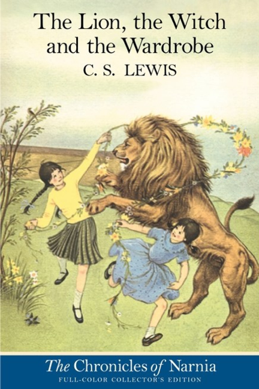
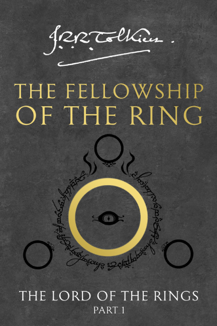
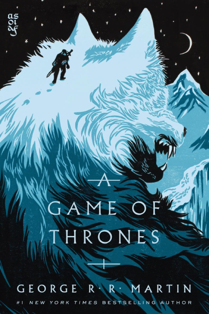

Welcome to Arcane Archives
At Arcane Archives, we believe every book holds a little bit of magic. Founded in 2019, our shop began as a small passion project dedicated to preserving the stories, legends, and forgotten worlds tucked inside well-loved pages. Since then, we’ve grown into a haven for readers who appreciate the charm and history that only used books can offer. We specialize in curated pre-loved titles—from timeless classics to hidden gems—giving each one a second life with those seeking adventure, knowledge, or a spark of imagination. At Arcane Archives, every visit feels like uncovering a new mystery.



BROWSE